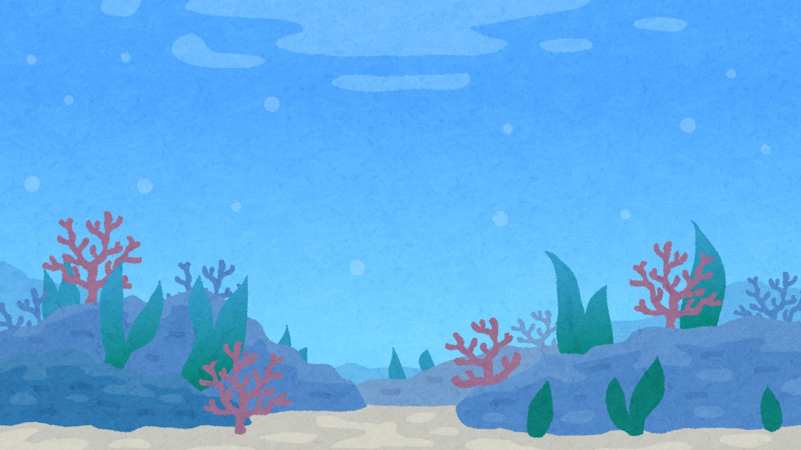
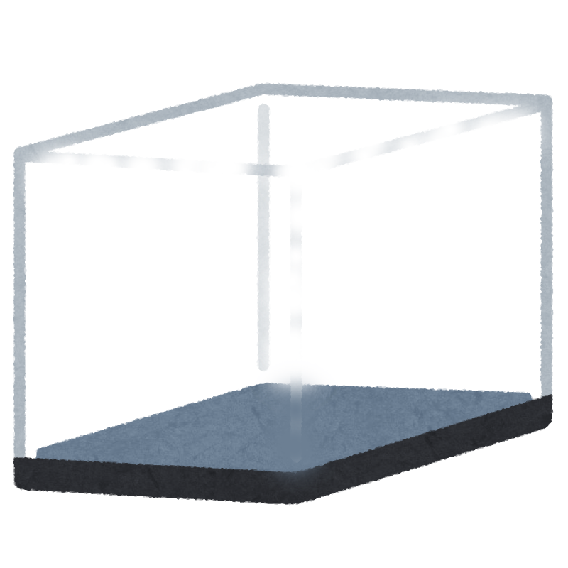
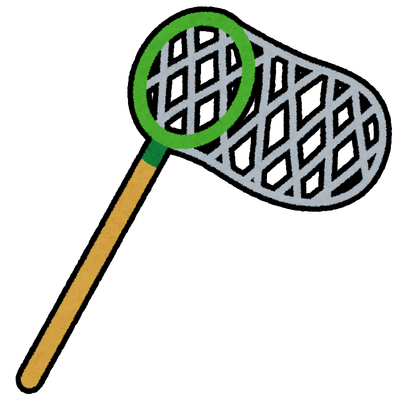
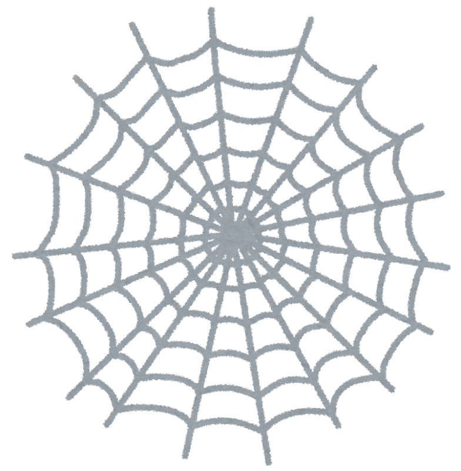
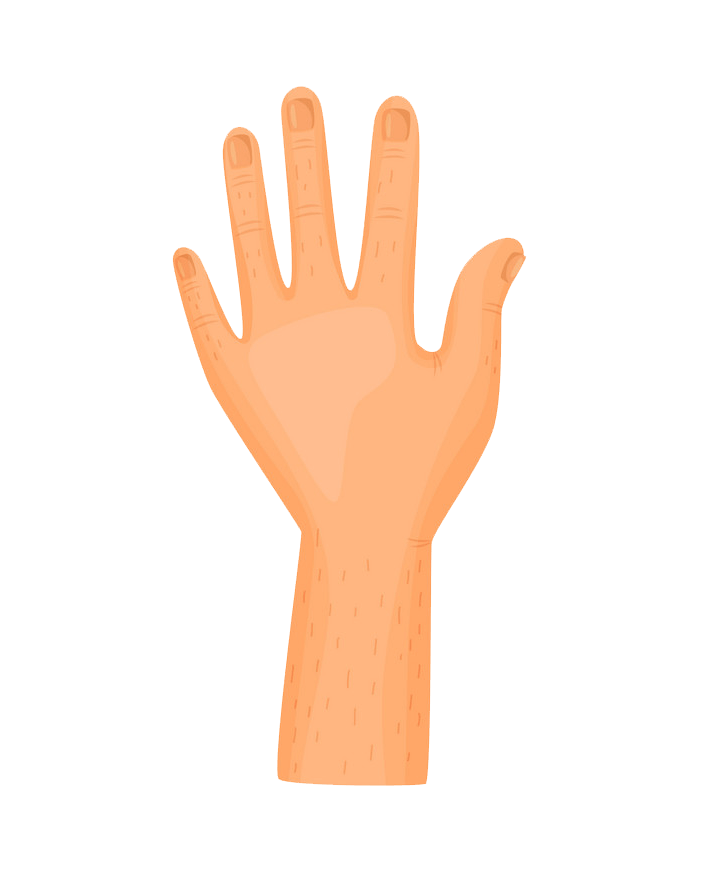
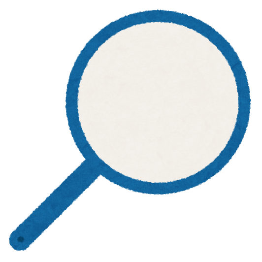

  <!-- リザルト画面 -->
  <div id="result-modal" style="position:fixed;z-index:99999;top:0;left:0;width:100vw;height:100vh;background:rgba(0,0,0,0.7);display:none;align-items:center;justify-content:center;">
    <div style="background:#fff;padding:2em 2.5em;border-radius:1.5em;box-shadow:0 0 30px #0008;min-width:320px;max-width:90vw;text-align:center;">
      <h2 style="font-size:2.5em;margin:0 0 0.5em 0;">結果発表</h2>
      <div id="result-score" style="font-size:5em;font-weight:bold;color:#d00;margin-bottom:0.5em;text-shadow:0 0 20px #fff,0 0 40px #f00;animation: resultPop 1.2s infinite alternate;"></div>
      <div id="result-countdown" style="font-size:1.5em;color:#333;margin-bottom:1em;"></div>
      <div id="result-bar-area" style="display:flex;flex-wrap:wrap;justify-content:center;gap:2px;margin-bottom:1.5em;"></div>
      <button id="result-retry-btn" style="font-size:1.2em;padding:0.5em 2em;border-radius:1em;background:#4fc3f7;color:#fff;border:none;box-shadow:0 2px 8px #0002;">設定画面に戻る</button>
    </div>
  </div>
<!DOCTYPE html>
<html lang="ja">
<head>
  <meta charset="UTF-8">
  <title>さかなとりゲーム Ver.5</title>
  <!-- PWA対応: manifestとservice worker登録 -->
  <link rel="manifest" href="manifest.json">
  <meta name="theme-color" content="#4fc3f7">
  <meta name="viewport" content="width=device-width,initial-scale=1,maximum-scale=1,user-scalable=no">
    <script>
      // 2本指以上のタッチでの拡大・スクロールを完全阻止
      document.addEventListener('touchstart', function(e) {
        if (e.touches && e.touches.length > 1) e.preventDefault();
      }, {passive: false});
      document.addEventListener('gesturestart', function(e) {
        e.preventDefault();
      });
    </script>
  <link rel="apple-touch-icon" href="icon-192.png">
  <script>
    // 効果音ファイルのプリロード
    const seMizu1 = new Audio('mizu1.wav');
    const seMizu2 = new Audio('mizu2.wav');
    const seShuukei = new Audio('shuukei.wav');
    // iOS対策: ユーザー操作後に再生許可
    function unlockAudio(audio) {
      if (audio && audio.play) {
        audio.play().then(()=>{audio.pause();audio.currentTime=0;}).catch(()=>{});
      }
    }
    window.addEventListener('pointerdown',()=>{
      unlockAudio(seMizu1); unlockAudio(seMizu2); unlockAudio(seShuukei);
    },{once:true});
    if ('serviceWorker' in navigator) {
      window.addEventListener('load', function() {
        navigator.serviceWorker.register('sw.js');
      });
    }
  </script>
  <style>
    body {
      margin: 0;
      overflow: hidden;
      position: relative;
      background-color: #6ab6d9;
    }
    #background-layers {
      position: absolute;
      top: 0;
      left: 0;
      width: 100vw;
      height: 100vh;
      pointer-events: none;
    }
    #background-layers img {
      position: absolute;
      width: 100vw;
      height: 100vh;
      pointer-events: none;
    }
    #layer1 { top: 0; left: 0; }
    #suisou {
      display: none; /* Not used */
    }
    #caught-layer {
      display: none; /* Not used */
    }
    #sakana-container {
      position: absolute;
      top: 0;
      left: 0;
      width: 100vw;
      height: 100vh;
      pointer-events: auto;
      z-index: 10;
    }
    .sakana {
      position: absolute;
      pointer-events: auto;
      cursor: pointer;
      will-change: transform, left, top;
    }
    .sakana.golden-fish {
      filter: sepia(1) saturate(4) hue-rotate(-50deg) brightness(1.3) !important;
      animation: goldenShine 1.5s infinite ease-in-out;
      border-radius: 50%; /* For better shadow effect */
    }
    .sakana.hit {
      animation: fishHit 0.2s ease-out;
    }
    @keyframes fishHit {
      0%, 100% { opacity: 1; }
      50% { opacity: 0.3; }
    }
    @keyframes goldenShine {
      0%, 100% { box-shadow: 0 0 15px 5px gold; }
      50% { box-shadow: 0 0 30px 10px gold; }
    }
    .high-score {
      color: #ffc107 !important;
      transform: scale(1.1);
    }
  </style>
  <style>
    @keyframes resultPop {
      0% { transform: scale(1); filter: brightness(1.2); }
      60% { transform: scale(1.18); filter: brightness(1.5); }
      100% { transform: scale(1); filter: brightness(1.2); }
    }
  </style>
</head>
<body>
  <div id="background-layers">
    
    <!--  -->
    <!-- <div id="caught-layer"></div> -->
  </div>
  <!-- 設定画面 -->
  <div id="setting-modal" style="position:fixed;z-index:99999;top:0;left:0;width:100vw;height:100vh;background:rgba(0,0,0,0.7);display:flex;align-items:center;justify-content:center;">
    <div style="background:#fff;padding:2em 2.5em;border-radius:1.5em;box-shadow:0 0 30px #0008;min-width:320px;max-width:90vw;">
      <h2 style="text-align:center;margin-top:0;">ゲーム設定</h2>
      <div style="margin-bottom:1.2em;">
        <div style="font-weight:bold;">アミの種類を選んでください</div>
        <div id="setting-ami-group" style="display:flex;gap:1em;justify-content:center;margin-top:0.5em;">
          
          
          
          
        </div>
      </div>
      <div style="margin-bottom:1.2em;">
        <div style="font-weight:bold;">制限時間を選んでください</div>
        <div id="setting-time-group" style="display:flex;gap:1em;justify-content:center;margin-top:0.5em;">
          <button type="button" data-time="20" style="font-size:1.1em;">20秒</button>
          <button type="button" data-time="30" style="font-size:1.1em;">30秒</button>
          <button type="button" data-time="40" style="font-size:1.1em;">40秒</button>
          <button type="button" data-time="60" style="font-size:1.1em;">60秒</button>
        </div>
      </div>
      <div style="margin-bottom:1.2em;">
        <div style="font-weight:bold;">タイマーを右上に表示しますか？</div>
        <div id="setting-timer-group" style="display:flex;gap:1em;justify-content:center;margin-top:0.5em;">
          <button type="button" data-timer="on">表示する</button>
          <button type="button" data-timer="off">表示しない</button>
        </div>
      </div>
      <div style="margin-bottom:1.2em;">
        <div style="font-weight:bold;">アミアイコンを表示しますか？</div>
        <div id="setting-amicursor-group" style="display:flex;gap:1em;justify-content:center;margin-top:0.5em;">
          <button type="button" data-amicursor="on">表示する</button>
          <button type="button" data-amicursor="off">表示しない</button>
        </div>
      </div>
      <div style="margin-bottom:1.2em;">
        <div style="font-weight:bold;">さかなを貫通して取れるモード</div>
        <div id="setting-through-group" style="display:flex;gap:1em;justify-content:center;margin-top:0.5em;">
          <button type="button" data-through="off">通常</button>
          <button type="button" data-through="on">貫通モード</button>
        </div>
      </div>
        <div style="margin-bottom:1.2em;">
          <div style="font-weight:bold;">魚の出る量を選んでください</div>
          <div id="setting-freq-group" style="display:flex;gap:1em;justify-content:center;margin-top:0.5em;">
            <button type="button" data-freq="1">大漁（たいりょう）</button>
            <button type="button" data-freq="2">たくさん</button>
            <button type="button" data-freq="3">ふつう</button>
            <button type="button" data-freq="4">すくない</button>
            <button type="button" data-freq="5">ほぼでない</button>
          </div>
        </div>
      <div style="text-align:center;margin-top:2em;">
        <button id="setting-start-btn" type="button" style="font-size:1.3em;padding:0.5em 2em;border-radius:1em;background:#4fc3f7;color:#fff;border:none;box-shadow:0 2px 8px #0002;opacity:0.5;pointer-events:none;">ゲーム開始</button>
      </div>
    </div>
  </div>
  <div id="sakana-container"></div>
  <!-- カウントダウン表示 -->
  <div id="countdown-overlay" style="position:fixed;z-index:99998;top:0;left:0;width:100vw;height:100vh;display:none;align-items:center;justify-content:center;background:rgba(0,0,0,0.5);">
    <div id="countdown-number" style="font-size:8rem;color:#fff;font-weight:bold;text-shadow:0 0 30px #000,0 0 10px #4fc3f7;"></div>
  </div>
  <!-- アミ選択UI（ゲーム中のみ表示） -->
  <div id="ami-icons" style="position:fixed;top:calc(2% + 3.5em);right:2%;z-index:210;display:none;flex-direction:column;gap:1em;align-items:flex-end;">
    
    
    
    
  </div>
  <!-- 点数表示UI -->
  <div id="score-container"
    style="position:absolute;left:10px;top:10px;z-index:410;display:flex;align-items:center;pointer-events:none;">
    <div id="score-display" style="font-size:5.5rem;font-weight:bold;color:#d00;text-shadow:3px 3px 0 #fff,0 0 10px #fff;transition:transform 0.3s, color 0.3s;">0点</div>
    <div id="score-bar-area" style="display:flex;flex-direction:column;margin-left:15px;height:80px;width:200px;flex-wrap:wrap;align-content:flex-start;"></div>
    <style>
      .score-anim {
        animation: scorePop 0.35s cubic-bezier(.7,2,.3,1);
      }
      .score-anim-big {
        animation: scorePopBig 0.45s cubic-bezier(.7,2,.3,1);
      }
      .score-flash {
        animation: scoreFlash 0.4s steps(2, end) infinite;
      }
      .score-flash-bar > div {
        animation: scoreFlashBar 0.4s steps(2, end) infinite;
      }
      @keyframes scorePop {
        0% { transform: scale(1); }
        40% { transform: scale(1.35); }
        100% { transform: scale(1); }
      }
      @keyframes scorePopBig {
        0% { transform: scale(1); }
        40% { transform: scale(1.7); }
        100% { transform: scale(1); }
      }
      @keyframes scoreFlash {
        0%, 100% {
          color: #d00;
          text-shadow: 3px 3px 0 #fff, 0 0 10px #fff, 0 0 0px gold;
        }
        50% {
          color: #fff;
          text-shadow: 0 0 24px #ffe066, 0 0 40px gold, 0 0 8px #fff;
        }
      }
      @keyframes scoreFlashBar {
        0%, 100% { background: gold; box-shadow: 0 0 0px #ffe066; }
        50% { background: gold; box-shadow: 0 0 16px 8px #ffe066; }
      }
    </style>
  </div>
  <!-- タイマー表示UI（右上） -->
  <div id="timer-container" style="position:fixed;top:10px;right:20px;z-index:500;display:none;">
    <span id="timer-label" style="font-size:2.5rem;font-weight:bold;color:#222;background:#fff8;padding:0.2em 0.7em;border-radius:1em;box-shadow:0 0 8px #0002;">00:00</span>
  </div>
  <script>
    // --- 設定画面ロジック ---
    let setting = {
      ami: '1',        // アミ種類 左
      time: '20',     // 制限時間 左
      timer: 'on',    // タイマー表示 左
      amicursor: 'on', // アミアイコン表示 左
      through: 'off'  // さかな貫通モード 左
        ,freq: '1'     // 魚の出る量（1が一番多い）
    };
    const throughGroup = document.getElementById('setting-through-group');
      const freqGroup = document.getElementById('setting-freq-group');
    // さかな貫通モード選択
    throughGroup.querySelectorAll('button').forEach((btn, idx) => {
      // 初期選択
      if(idx === 0) {
        btn.style.background = '#4fc3f7';
        btn.style.color = '#fff';
      }
      btn.addEventListener('click', function() {
        throughGroup.querySelectorAll('button').forEach(b=>b.style.background='');
        throughGroup.querySelectorAll('button').forEach(b=>b.style.color='');
        this.style.background = '#4fc3f7';
        this.style.color = '#fff';
        setting.through = this.getAttribute('data-through');
        checkSettingReady();
      });
    });

      // 魚の出る量選択
      freqGroup.querySelectorAll('button').forEach((btn, idx) => {
        // 初期選択（左端が一番多い）
        if(idx === 0) {
          btn.style.background = '#4fc3f7';
          btn.style.color = '#fff';
        }
        btn.addEventListener('click', function() {
          freqGroup.querySelectorAll('button').forEach(b=>b.style.background='');
          freqGroup.querySelectorAll('button').forEach(b=>b.style.color='');
          this.style.background = '#4fc3f7';
          this.style.color = '#fff';
          setting.freq = this.getAttribute('data-freq');
          checkSettingReady();
        });
      });
    const settingModal = document.getElementById('setting-modal');
    const amiGroup = document.getElementById('setting-ami-group');
    const timeGroup = document.getElementById('setting-time-group');
    const timerGroup = document.getElementById('setting-timer-group');
    const startBtn = document.getElementById('setting-start-btn');
    const amicursorGroup = document.getElementById('setting-amicursor-group');
    // アミアイコン表示選択
    amicursorGroup.querySelectorAll('button').forEach((btn, idx) => {
      // 初期選択
      if(idx === 0) {
        btn.style.background = '#4fc3f7';
        btn.style.color = '#fff';
      }
      btn.addEventListener('click', function() {
        amicursorGroup.querySelectorAll('button').forEach(b=>b.style.background='');
        amicursorGroup.querySelectorAll('button').forEach(b=>b.style.color='');
        this.style.background = '#4fc3f7';
        this.style.color = '#fff';
        setting.amicursor = this.getAttribute('data-amicursor');
        checkSettingReady();
      });
    });

    // アミ選択
    amiGroup.querySelectorAll('img').forEach((img, idx) => {
      // 初期選択
      if(idx === 0) {
        img.style.borderColor = '#4fc3f7';
      }
      img.addEventListener('click', function() {
        amiGroup.querySelectorAll('img').forEach(i=>i.style.borderColor='#ccc');
        this.style.borderColor = '#4fc3f7';
        setting.ami = this.getAttribute('data-ami');
        checkSettingReady();
      });
    });
    // 時間選択
    timeGroup.querySelectorAll('button').forEach((btn, idx) => {
      // 初期選択
      if(idx === 0) {
        btn.style.background = '#4fc3f7';
        btn.style.color = '#fff';
      }
      btn.addEventListener('click', function() {
        timeGroup.querySelectorAll('button').forEach(b=>b.style.background='');
        timeGroup.querySelectorAll('button').forEach(b=>b.style.color='');
        this.style.background = '#4fc3f7';
        this.style.color = '#fff';
        setting.time = this.getAttribute('data-time');
        checkSettingReady();
      });
    });
    // タイマー表示選択
    timerGroup.querySelectorAll('button').forEach((btn, idx) => {
      // 初期選択
      if(idx === 0) {
        btn.style.background = '#4fc3f7';
        btn.style.color = '#fff';
      }
      btn.addEventListener('click', function() {
        timerGroup.querySelectorAll('button').forEach(b=>b.style.background='');
        timerGroup.querySelectorAll('button').forEach(b=>b.style.color='');
        this.style.background = '#4fc3f7';
        this.style.color = '#fff';
        setting.timer = this.getAttribute('data-timer');
        checkSettingReady();
      });
    });
    // 設定が全て選ばれたらボタン有効化
    function checkSettingReady() {
      if(setting.ami && setting.time && setting.timer && setting.amicursor && setting.through && setting.freq) {
        startBtn.style.opacity = 1;
        startBtn.style.pointerEvents = 'auto';
      } else {
        startBtn.style.opacity = 0.5;
        startBtn.style.pointerEvents = 'none';
      }
    }
    // 初期状態でボタン有効化
    startBtn.style.opacity = 1;
    startBtn.style.pointerEvents = 'auto';
    // ゲーム開始ボタン
    startBtn.addEventListener('click', function() {
      settingModal.style.display = 'none';
      // カウントダウン開始
      showCountdown(() => {
        // アミアイコン表示設定
        // 右上のアミアイコンUIは廃止
        document.getElementById('ami-icons').style.display = 'none';
        // アミ初期選択
        setAmiCursor('ami'+setting.ami+'.png', [180,360,90,20][setting.ami-1], 'ami'+setting.ami+'-icon');
        // タイマー表示設定
        if(setting.timer === 'on') {
          document.getElementById('timer-container').style.display = '';
        } else {
          document.getElementById('timer-container').style.display = 'none';
        }
          startGameTimer(parseInt(setting.time));
          startSakanaInterval();
      });
    });

    // ゲームタイマー
    let timerInterval = null;
    let timerVoiceInterval = null;
    function startGameTimer(sec) {
      const timerLabel = document.getElementById('timer-label');
      let remain = sec;
      timerLabel.textContent = formatTime(remain);
      if(timerInterval) clearInterval(timerInterval);
      if(timerVoiceInterval) clearInterval(timerVoiceInterval);
      timerInterval = setInterval(()=>{
        remain--;
        timerLabel.textContent = formatTime(remain);
        if(remain <= 0) {
          clearInterval(timerInterval);
          timerLabel.textContent = '終了';
          showResult();
        }
      }, 1000);
    }
        // 音声合成
        function speakText(text) {
          if (!window.speechSynthesis) return;
          const uttr = new SpeechSynthesisUtterance(text);
          uttr.lang = 'ja-JP';
          window.speechSynthesis.speak(uttr);
        }

        // 終了時リザルト画面表示
        function showResult() {
          // 完全操作不能
          document.body.style.pointerEvents = 'none';
          document.getElementById('ami-icons').style.pointerEvents = 'none';
          // カスタムカーソル（アミ画像）を消す
          if (customCursor) { customCursor.remove(); customCursor = null; }
          document.body.style.cursor = '';
          // 音声
          speakText('おしまいです');
          // 点数とバー
          const resultModal = document.getElementById('result-modal');
          const resultScore = document.getElementById('result-score');
          const resultBar = document.getElementById('result-bar-area');
          const resultCountdown = document.getElementById('result-countdown');
          resultScore.textContent = totalScore + '点';
          resultBar.innerHTML = '';
          for(let i=0;i<totalScore;i++){
            const seg = document.createElement('div');
            seg.style.cssText = 'width:18px;height:28px;background:gold;border:1px solid #daa520;margin:1px;border-radius:4px;display:inline-block;';
            resultBar.appendChild(seg);
          }
          resultModal.style.display = 'flex';

          // カウントダウン表示（10秒→0秒）
          let remain = 10;
          resultCountdown.textContent = `自動で終了まで ${remain} 秒`;
          const cdTimer = setInterval(()=>{
            remain--;
            if(remain>0){
              resultCountdown.textContent = `自動で終了まで ${remain} 秒`;
            }else{
              resultCountdown.textContent = '終了します';
              clearInterval(cdTimer);
              // 10秒後に自動で最初の画面（リロード）
              location.reload();
            }
          },1000);

          // リザルト画面の操作を即時有効化（10秒待たずに戻れる）
          setTimeout(() => {
            document.body.style.pointerEvents = '';
            if (customCursor) { customCursor.remove(); customCursor = null; }
            document.body.style.cursor = '';
          }, 100);

          // 再設定ボタン
          const retry = document.getElementById('result-retry-btn');
          function backToSetting(e) {
            if (e) e.stopPropagation();
            resultModal.style.display = 'none';
            document.getElementById('setting-modal').style.display = 'flex';
            document.querySelectorAll('.sakana').forEach(f=>f.remove());
            totalScore = 0;
            updateScoreDisplay();
            document.getElementById('timer-container').style.display = 'none';
            document.getElementById('countdown-overlay').style.display = 'none';
            document.getElementById('ami-icons').style.display = 'none';
            if (customCursor) { customCursor.remove(); customCursor = null; }
            document.body.style.cursor = '';
            document.body.style.pointerEvents = '';
            if (sakanaInterval) { clearInterval(sakanaInterval); sakanaInterval = null; }
          }
          retry.onclick = backToSetting;
          retry.ontouchstart = backToSetting;
        }
    function formatTime(sec) {
      const m = Math.floor(sec/60);
      const s = sec%60;
      return `${m.toString().padStart(2,'0')}:${s.toString().padStart(2,'0')}`;
    }

    // カウントダウン演出
    function showCountdown(onFinish) {
      const overlay = document.getElementById('countdown-overlay');
      const number = document.getElementById('countdown-number');
      overlay.style.display = 'flex';
      let count = 3;
      number.textContent = count;
      let interval = setInterval(() => {
        count--;
        if(count > 0) {
          number.textContent = count;
        } else if(count === 0) {
          number.textContent = 'スタート!';
        } else {
          clearInterval(interval);
          overlay.style.display = 'none';
          if(onFinish) onFinish();
        }
      }, 900);
    }
    // --- ユーザー操作の制限 ---
    window.addEventListener('contextmenu', e => e.preventDefault(), {passive:false});
    window.addEventListener('dblclick', e => e.preventDefault(), {passive:false});
    document.addEventListener('touchmove', e => { if (e.touches && e.touches.length > 1) e.preventDefault(); }, {passive:false});

    // --- アミ選択・ポインタ制御 ---
    let currentAmi = null;
    let customCursor = null;
    const amiIcons = [
      { id: 'ami1-icon', src: 'ami1.png', size: 180 },
      { id: 'ami2-icon', src: 'ami2.png', size: 360 },
      { id: 'ami3-icon', src: 'ami3.png', size: 90 },
      { id: 'ami4-icon', src: 'ami4.png', size: 20 }
    ];
    amiIcons.forEach(({id,src,size}) => {
      const iconElem = document.getElementById(id);
      iconElem.addEventListener('pointerdown', () => setAmiCursor(src, size, id));
    });

    // 設定画面があるので初期アミ選択は不要
    // window.addEventListener('DOMContentLoaded', () => {
    //   setAmiCursor('ami1.png', 180, 'ami1-icon');
    // });

    function setAmiCursor(src, size, iconId) {
      if (customCursor) customCursor.remove();
      currentAmi = { src, size };
      // アミアイコン非表示設定ならcustomCursorを作らない
      if (setting.amicursor === 'off') {
        customCursor = null;
        document.body.style.cursor = '';
        window.removeEventListener('pointermove', moveCustomCursor);
        return;
      }
      customCursor = document.createElement('img');
      customCursor.src = src;
      customCursor.style.cssText = `position:fixed; pointer-events:none; z-index:9999; width:${size}px; height:${size}px; opacity:0.85;`;
      document.body.appendChild(customCursor);
      document.body.style.cursor = 'none';
      window.addEventListener('pointermove', moveCustomCursor);
    }

    // アミアイコン非表示設定時、ヒット時だけ一時的に表示
    function showCursorOnceAt(x, y) {
      if (!currentAmi) return;
      if (customCursor) customCursor.remove();
      customCursor = document.createElement('img');
      customCursor.src = 'ami'+setting.ami+'.png';
      customCursor.style.cssText = `position:fixed; pointer-events:none; z-index:9999; width:${currentAmi.size}px; height:${currentAmi.size}px; opacity:0.85; left:${x-currentAmi.size/2}px; top:${y-currentAmi.size/2}px; transition: transform 0.12s; transform: scale(1);`;
      document.body.appendChild(customCursor);
      // 拡大アニメーション
      setTimeout(() => {
        if (customCursor) customCursor.style.transform = 'scale(1.25)';
        setTimeout(() => {
          if (customCursor) customCursor.style.transform = 'scale(1)';
          setTimeout(() => {
            if (customCursor) { customCursor.remove(); customCursor = null; }
          }, 120);
        }, 120);
      }, 0);
    }

    function moveCustomCursor(e) {
      if (customCursor) {
        customCursor.style.left = (e.clientX - customCursor.width/2) + 'px';
        customCursor.style.top = (e.clientY - customCursor.height/2) + 'px';
      }
    }

    // --- ゲームロジック ---
    const sakanaContainer = document.getElementById('sakana-container');
    const sakanaImages = ['sakana.gif', 'sakana2.gif', 'sakana1.png', 'sakana2.png', 'sakana3.png'];
    const rareSakanaImages = ['sakana4.png', 'sakana5.png', 'sakana6.png', 'sakana7.png'];
    let totalScore = 0;

    // アミで魚を捕まえる処理
    window.addEventListener('pointerdown', function(e) {
      if (!currentAmi) return;
      let cx, cy;
      // 左クリックのみ中心、他はそのまま
      if (e.pointerType === 'mouse' && e.button === 0) {
        cx = window.innerWidth / 2;
        cy = window.innerHeight / 2;
        // アミのアニメーション（中心で）
        if (customCursor) {
          customCursor.style.transition = 'transform 0.12s';
          customCursor.style.transform = 'scale(1.25)';
          customCursor.style.left = (cx - customCursor.width/2) + 'px';
          customCursor.style.top = (cy - customCursor.height/2) + 'px';
          setTimeout(() => {
            if (customCursor) customCursor.style.transform = 'scale(1)';
          }, 120);
        }
      } else {
        // 右クリック・ミドルクリック・タッチはそのまま
        cx = e.clientX;
        cy = e.clientY;
        if (customCursor) {
          customCursor.style.transition = 'transform 0.12s';
          customCursor.style.transform = 'scale(1.25)';
          customCursor.style.left = (cx - customCursor.width/2) + 'px';
          customCursor.style.top = (cy - customCursor.height/2) + 'px';
          setTimeout(() => {
            if (customCursor) customCursor.style.transform = 'scale(1)';
          }, 120);
        }
      }
      const r = currentAmi.size / 2;
      const sakanaList = Array.from(document.querySelectorAll('.sakana'));
      if (setting.through === 'on') {
        // 貫通モード: 全ての魚を捕獲
        let hit = false;
        for(let i=sakanaList.length-1;i>=0;i--) {
          const sakana = sakanaList[i];
          if (sakana.classList.contains('catching')) continue;
          const rect = sakana.getBoundingClientRect();
          const sx = rect.left + rect.width/2;
          const sy = rect.top + rect.height/2;
          const dist = Math.hypot(cx-sx, cy-sy);
          if (dist < Math.max(r, rect.width/2, rect.height/2)) {
            if (setting.amicursor === 'off') {
              showCursorOnceAt(cx, cy);
            }
            handleCatchAttempt(sakana);
            hit = true;
          }
        }
      } else {
        // 通常: 一番手前の魚だけ
        for(let i=sakanaList.length-1;i>=0;i--) {
          const sakana = sakanaList[i];
          if (sakana.classList.contains('catching')) continue;
          const rect = sakana.getBoundingClientRect();
          const sx = rect.left + rect.width/2;
          const sy = rect.top + rect.height/2;
          const dist = Math.hypot(cx-sx, cy-sy);
          if (dist < Math.max(r, rect.width/2, rect.height/2)) {
            if (setting.amicursor === 'off') {
              showCursorOnceAt(cx, cy);
            }
            handleCatchAttempt(sakana);
            break;
          }
        }
      }
      e.preventDefault();
    }, true);

    function handleCatchAttempt(sakana) {
      seMizu1.currentTime = 0;
      seMizu1.play();
      
      if (sakana.dataset.type === 'golden') {
        sakana.dataset.hp = parseInt(sakana.dataset.hp) - 1;
        sakana.classList.add('hit');
        setTimeout(() => sakana.classList.remove('hit'), 200);
        if (parseInt(sakana.dataset.hp) <= 0) {
          catchSakana(sakana);
        }
      } else {
        catchSakana(sakana);
      }
    }

    function createSakana() {
      if (document.querySelectorAll('.sakana').length >= 70) return;

      const img = document.createElement('img');
      img.classList.add('sakana');

      // --- 魚のパラメータ設定 ---
      let fishType = 'normal';
      const typeRand = Math.random();
      if (typeRand < 0.03) fishType = 'golden';      // 3%
      else if (typeRand < 0.08) fishType = 'superFast'; // 5%
      else if (typeRand < 0.2) fishType = 'fast';       // 12%
      else if (typeRand < 0.4) fishType = 'diagonal';   // 20%
      else if (typeRand < 0.6) fishType = 'uturn';      // 20%

      img.dataset.type = fishType;

      // サイズ (小さいほど高得点)
      const sizeRand = Math.random();
      let fishW, sizeScore;
      if (sizeRand < 0.1) { fishW = 40 + Math.random() * 20; sizeScore = 3; } // 極小
      else if (sizeRand < 0.3) { fishW = 61 + Math.random() * 30; sizeScore = 2; } // 小
      else if (sizeRand < 0.8) { fishW = 91 + Math.random() * 50; sizeScore = 1; } // 中
      else { fishW = 200 + Math.random() * 80; sizeScore = 0; } // 大
      img.style.width = `${fishW}px`;

      // 速度 (速いほど高得点)
      let speed = 1 + Math.random() * 1.5;
      let speedScore = 0;
      if (fishType === 'fast') {
        speed = 3 + Math.random() * 2;
        speedScore = 2;
      } else if (fishType === 'superFast') {
        speed = 10 + Math.random() * 5;
        speedScore = 5;
      }

      // 点数計算
      let points = 1 + sizeScore + speedScore;
      if (fishType === 'golden') {
        img.src = rareSakanaImages[Math.floor(Math.random() * rareSakanaImages.length)];
        img.classList.add('golden-fish');
        img.dataset.hp = 10;
        points = 10;
      } else {
        img.src = sakanaImages[Math.floor(Math.random() * sakanaImages.length)];
        const hue = Math.floor(Math.random() * 360);
        img.style.filter = `hue-rotate(${hue}deg)`;
      }
      img.dataset.points = points;

      // --- 魚の動き ---
      img.style.top = `${Math.random() * window.innerHeight * 0.85}px`;
      let x = Math.random() < 0.5 ? -fishW : window.innerWidth;
      let direction = x < 0 ? 1 : -1;
      let y = parseFloat(img.style.top);
      let dx = direction * speed;
      let dy = 0;

      if (fishType === 'diagonal' || fishType === 'fast' || fishType === 'superFast') {
        dy = (Math.random() - 0.5) * speed;
      }
      
      img.style.left = `${x}px`;
      
      function setFishTransform(fish, dx, dy) {
        const angle = Math.atan2(dy, dx) * 180 / Math.PI;
        if (dx >= 0) { // Moving right
          // Flip the left-facing image to face right, then rotate.
          fish.style.transform = `scaleX(-1) rotate(${angle}deg)`;
        } else { // Moving left
          // Use the original left-facing image. Rotate from the 180-degree baseline.
          fish.style.transform = `scaleX(1) rotate(${angle - 180}deg)`;
        }
      }
      setFishTransform(img, dx, dy);

      sakanaContainer.appendChild(img);

      let lastUTurn = Date.now();
      function move() {
        if (img.classList.contains('catching')) return;
        
        x += dx;
        y += dy;

        // Uターン処理
        if (fishType === 'uturn' && Date.now() - lastUTurn > 3000 + Math.random() * 4000) {
          direction *= -1;
          dx *= -1;
          setFishTransform(img, dx, dy);
          lastUTurn = Date.now();
        }

        // 壁での反射
        if (x < -fishW - 100 || x > window.innerWidth + 100) {
          img.remove();
          return;
        }
        if (y < 0 || y > window.innerHeight - fishW) {
          dy *= -1;
          setFishTransform(img, dx, dy);
        }

        img.style.left = `${x}px`;
        img.style.top = `${y}px`;
        requestAnimationFrame(move);
      }
      move();
    }

    function catchSakana(sakana) {
      if (sakana.classList.contains('catching')) return;
      sakana.classList.add('catching');
      sakana.style.pointerEvents = 'none';

      // --- 派手な水しぶきエフェクト（疑似的にdivで表現） ---
      const rect = sakana.getBoundingClientRect();
      const centerX = rect.left + rect.width/2;
      const centerY = rect.top + rect.height/2;
      const splashCount = 22;
      for(let i=0;i<splashCount;i++){
        const angle = (2*Math.PI/splashCount)*i + Math.random()*0.2;
        const dist = 120 + Math.random()*60;
        const size = 22 + Math.random()*16;
        const color = 'rgba(120,200,255,'+(0.5+Math.random()*0.5)+')';
        const drop = document.createElement('div');
        drop.style.position = 'fixed';
        drop.style.left = (centerX-size/2) + 'px';
        drop.style.top = (centerY-size/2) + 'px';
        drop.style.width = size+'px';
        drop.style.height = size+'px';
        drop.style.borderRadius = '50%';
        drop.style.background = color;
        drop.style.boxShadow = '0 0 24px #fff8, 0 0 8px #8fdfff';
        drop.style.pointerEvents = 'none';
        drop.style.zIndex = '2147483647'; // 最大値で最前面
        drop.style.opacity = '1';
        drop.style.transform = 'scale(1)';
        drop.style.transition = 'transform 0.7s cubic-bezier(.7,2,.3,1), opacity 0.7s';
        document.body.appendChild(drop);
        setTimeout(()=>{
          drop.style.transform = `translate(${Math.cos(angle)*dist}px,${Math.sin(angle)*dist}px) scale(0.7)`;
          drop.style.opacity = '0';
          setTimeout(()=>{ drop.remove(); }, 700);
        }, 10);
      }

      totalScore += parseInt(sakana.dataset.points);
      updateScoreDisplay();

      const originalTransform = sakana.style.transform;
      // 1. Pop animation
      sakana.style.transition = 'transform 0.2s ease-out';
      sakana.style.transform = `${originalTransform} scale(1.5)`;

      // 2. Shrink back
      setTimeout(() => {
        sakana.style.transform = originalTransform;
      }, 200);

      // 3. Slide off
      setTimeout(() => {
        sakana.style.transition = 'transform 0.8s ease-in, opacity 0.8s ease-in';
        const directions = [
          { x: 0, y: -1 }, { x: 0, y: 1 }, { x: -1, y: 0 }, { x: 1, y: 0 }
        ];
        const randomDir = directions[Math.floor(Math.random() * directions.length)];
        const slideDistance = Math.max(window.innerWidth, window.innerHeight);
        sakana.style.transform = `${originalTransform} translate(${randomDir.x * slideDistance}px, ${randomDir.y * slideDistance}px)`;
        sakana.style.opacity = '0';
      }, 500);

      // 4. Remove from DOM
      setTimeout(() => {
        sakana.remove();
      }, 1300); // 500ms wait + 800ms slide
    }

    function updateScoreDisplay() {
      const scoreDisplay = document.getElementById('score-display');
      scoreDisplay.textContent = `${totalScore}点`;
      seShuukei.currentTime = 0;
      seShuukei.play();

      // Style score text when >= 100
      if (totalScore >= 100) {
        scoreDisplay.classList.add('high-score');
      } else {
        scoreDisplay.classList.remove('high-score');
      }

      // Update score bar next to the score
      const barArea = document.getElementById('score-bar-area');
      barArea.innerHTML = '';
      const segmentCount = totalScore; // 1 bar per point
      for (let i = 0; i < segmentCount; i++) {
        const segment = document.createElement('div');
        // Smaller segments for better look
        segment.style.cssText = 'width: 8px; height: 12px; background: gold; border: 1px solid #daa520; margin: 1px;';
        barArea.appendChild(segment);
      }

      // --- アニメーション ---
      // 50点ごとに大きく、3秒点滅
      if (!updateScoreDisplay.prevScore) updateScoreDisplay.prevScore = 0;
      if (totalScore > updateScoreDisplay.prevScore) {
        if (totalScore > 0 && totalScore % 50 === 0) {
          scoreDisplay.classList.remove('score-anim');
          scoreDisplay.classList.add('score-anim-big');
          barArea.classList.add('score-anim-big');
          // 3秒点滅
          scoreDisplay.classList.add('score-flash');
          barArea.classList.add('score-flash-bar');
          setTimeout(() => {
            scoreDisplay.classList.remove('score-flash');
            barArea.classList.remove('score-flash-bar');
          }, 3000);
          setTimeout(() => {
            scoreDisplay.classList.remove('score-anim-big');
            barArea.classList.remove('score-anim-big');
          }, 450);
        } else {
          scoreDisplay.classList.remove('score-anim-big');
          barArea.classList.remove('score-anim-big');
          scoreDisplay.classList.add('score-anim');
          barArea.classList.add('score-anim');
          setTimeout(() => {
            scoreDisplay.classList.remove('score-anim');
            barArea.classList.remove('score-anim');
          }, 350);
        }
      }
      updateScoreDisplay.prevScore = totalScore;
    }

    const scoreContainer = document.getElementById('score-container');
    // positionScoreAboveSuisou and its resize listener are removed as the tank is gone.

    // --- 魚出現間隔制御 ---
    let sakanaInterval = null;
    function startSakanaInterval() {
      if(sakanaInterval) clearInterval(sakanaInterval);
      // 出現間隔を選択値で変える（1:最速, 5:遅い）
      const freqMap = { '1': 100, '2': 180, '3': 300, '4': 500, '5': 800 };
      const interval = freqMap[setting.freq] || 180;
      sakanaInterval = setInterval(createSakana, interval);
    }
    // 初期は何も出さない（設定画面で開始時に出現）
  </script>
</body>
</html>
